دليل المستخدم الرسمي
مخزني الذكي Pro
نظام إدارة المخزون الذكي — RoboVAI WMS Platform
دليل شامل واحترافي لاستخدام جميع ميزات التطبيق، من تسجيل الدخول إلى إدارة الأصناف والحركات والتقارير والإعدادات.
تمرير للأسفل
نظام إدارة المخزون الذكي — RoboVAI WMS Platform
دليل شامل واحترافي لاستخدام جميع ميزات التطبيق، من تسجيل الدخول إلى إدارة الأصناف والحركات والتقارير والإعدادات.
عند فتح التطبيق لأول مرة أو بعد تسجيل الخروج، ستظهر شاشة تسجيل الدخول. أدخل اسم المستخدم وكلمة المرور للوصول إلى لوحة التحكم الرئيسية.
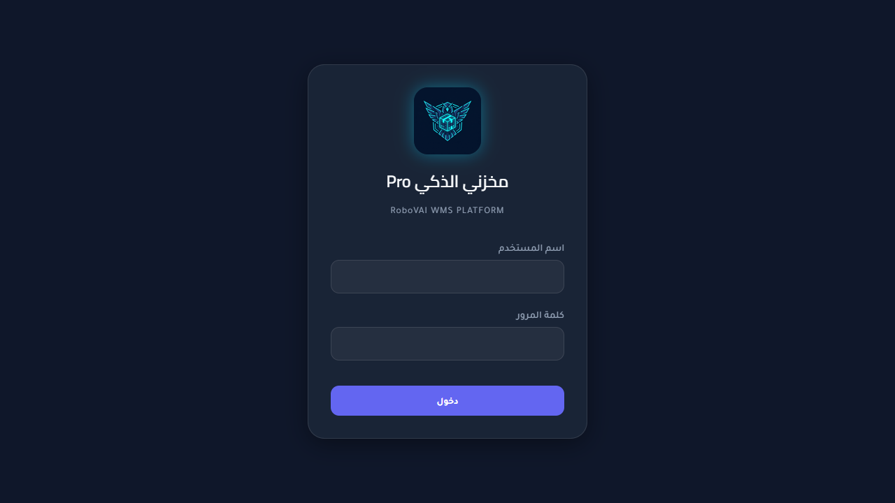
اكتب admin في حقل "اسم المستخدم"
اكتب admin123 في حقل "كلمة المرور"
سيتم التحقق من بياناتك والانتقال إلى لوحة التحكم فوراً
تنبيه: يُنصح بتغيير كلمة المرور الافتراضية بعد أول تسجيل دخول من قسم الإعدادات، للحفاظ على أمان النظام.
لوحة التحكم هي الصفحة الرئيسية التي تعرض ملخصاً شاملاً لحالة المخزون لحظةً بلحظة. تحتوي على بطاقات إحصائية وأعلى الأصناف حركةً ومنتجات تحتاج إلى إعادة طلب.
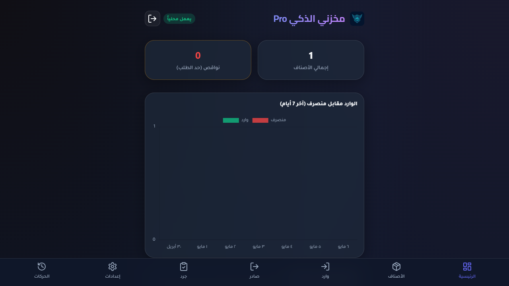
نصيحة: استخدم شريط التنقل السفلي للتنقل بسرعة بين الأقسام: الرئيسية، الأصناف، وارد، صادر، جرد، حركات، إعدادات.
يُتيح قسم الأصناف عرض جميع المنتجات المخزنة مع تفاصيلها الكاملة. يمكنك البحث، التصفية، والتصدير إلى Excel بضغطة واحدة.
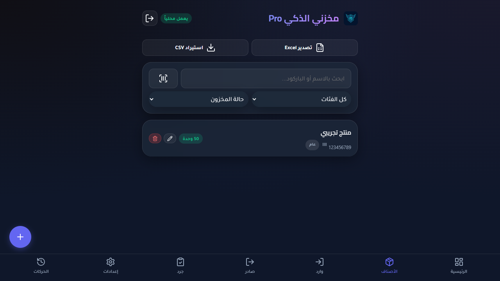
اكتب اسم الصنف أو رقم الباركود في خانة البحث للتصفية الفورية
استخدم أزرار التبديل في الأعلى لاختيار طريقة العرض المناسبة
انقر على "تصدير Excel" لتنزيل قائمة الأصناف كاملةً في ملف جداول بيانات
يمكنك رفع ملف CSV لاستيراد أصناف متعددة دفعةً واحدة
لإضافة صنف جديد إلى المخزون، انقر على زر "إضافة صنف" في قسم الأصناف. ستظهر نموذج الإضافة الشامل الذي يتيح إدخال كافة تفاصيل المنتج.
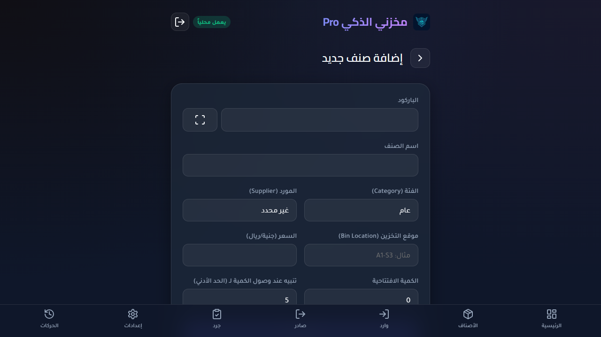
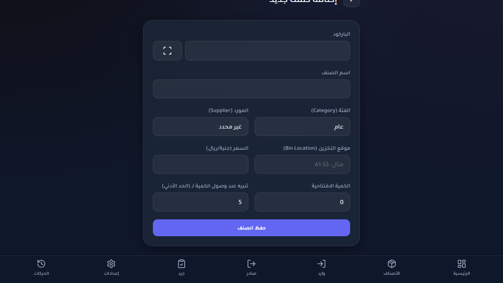
اكتب اسم المنتج في حقل "اسم الصنف" (مطلوب)
أدخل رقم الباركود يدوياً أو امسحه بكاميرا الجهاز
اختر تصنيف الصنف والمورد المناسبَين من القائمة
حدد سعر الشراء والبيع، الكمية الحالية، وحد إعادة الطلب
سيظهر إشعار نجاح وسيُضاف الصنف إلى القائمة فوراً
ملاحظة: بعد الحفظ الناجح ستظهر رسالة "تم إضافة الصنف بنجاح!" ويمكنك إضافة صنف آخر مباشرةً.
يمكنك تعديل بيانات أي صنف في أي وقت بالضغط على أيقونة القلم في بطاقة الصنف. ستفتح نافذة التعديل بالبيانات الحالية جاهزةً للتغيير.
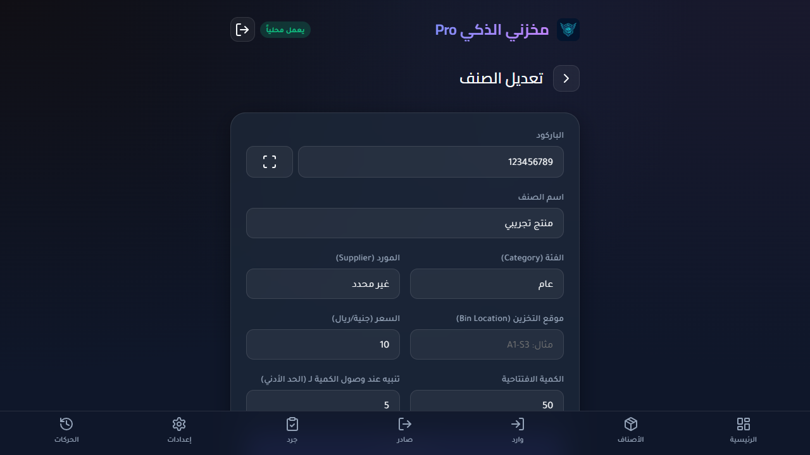
اذهب إلى قسم "الأصناف" من شريط التنقل
في بطاقة الصنف، اضغط أيقونة القلم ✏️ لفتح نموذج التعديل
غيّر أي حقل تريد تحديثه (السعر، الكمية، الاسم، إلخ)
انقر "حفظ التعديلات" لتطبيق التحديث فوراً
تنبيه: لحذف صنف، اضغط أيقونة سلة المهملات 🗑️ في البطاقة. سيُطلب منك تأكيد الحذف قبل تنفيذه لتجنب الحذف العرضي.
يُستخدم هذا القسم لتسجيل البضائع الواردة وإضافة كميات جديدة إلى المخزون. يدعم المسح الضوئي للباركود، وتتبع الدُفعات وتواريخ الانتهاء.
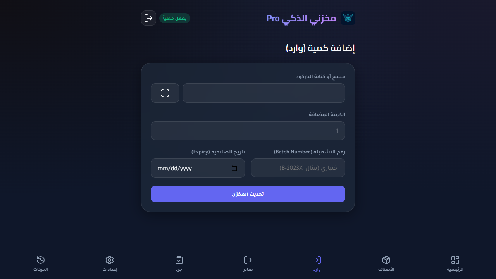
اكتب رقم الباركود يدوياً أو استخدم زر المسح 📷 لمسحه بالكاميرا
حدد عدد الوحدات الداخلة إلى المخزون في هذه الدفعة
مثال: B-2023X — يُفيد في تتبع الدفعات للمنتجات الغذائية والدوائية
للمنتجات ذات صلاحية محددة
سيُحدَّث مخزون الصنف تلقائياً وتُسجَّل الحركة في السجل
نصيحة: يمكن مسح الباركود بكاميرا الجهاز للإدخال السريع دون الكتابة اليدوية — مناسب جداً للمستودعات ذات الحجم الكبير.
قسم الصادر يُتيح إصدار أذونات صرف للأصناف من المخزن. يمكنك صرف أصناف متعددة في إذن واحد مع تحديد الجهة المستلمة.
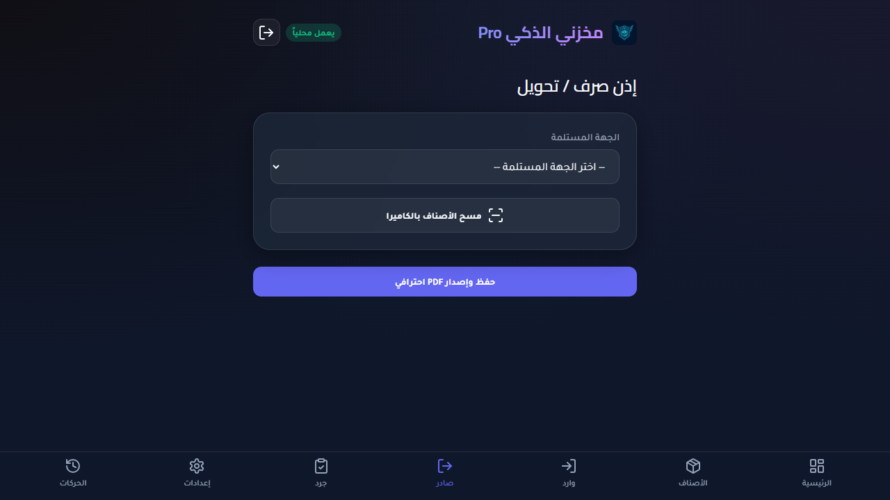
اختر القسم أو الشخص المستلم للبضاعة من القائمة المنسدلة
أدخل باركود الصنف أو امسحه بالكاميرا، ثم حدد الكمية المراد صرفها
يمكنك إضافة عدة أصناف في إذن صرف واحد
سيُخصَم المخزون وتُسجَّل الحركة وتُنشأ وثيقة الإذن
نصيحة: يدعم النظام المسح الضوئي بالكاميرا لإضافة الأصناف سريعاً دون الحاجة لكتابة الباركود يدوياً.
قسم الجرد يُمكّنك من إجراء جرد شامل أو جزئي للمخزون ومطابقته مع الأرصدة الدفترية. يدعم المسح الضوئي وإدخال الكميات الفعلية.
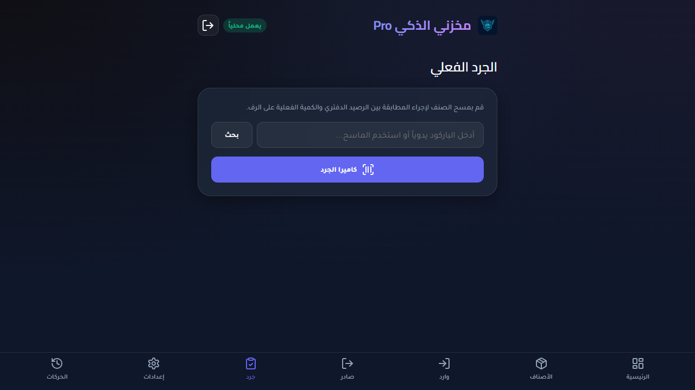
انقر على "بدء جلسة جرد جديدة" لتفعيل وضع الجرد
استخدم خانة البحث بالباركود أو كاميرا المسح الضوئي لاختيار كل صنف
أدخل الكمية الفعلية الموجودة فيزيائياً في المخزن لكل صنف
بعد جرد جميع الأصناف، انقر "تأكيد الجرد" لحفظ نتائج المطابقة
تنبيه: سيتم تحديث أرصدة المخزون تلقائياً بناءً على نتائج الجرد. راجع الفروقات قبل التأكيد النهائي.
يعرض سجل الحركات جميع العمليات التي تمت على المخزون مرتبةً زمنياً. يمكن تصفيتها بالتاريخ، النوع، أو البحث عن صنف محدد.
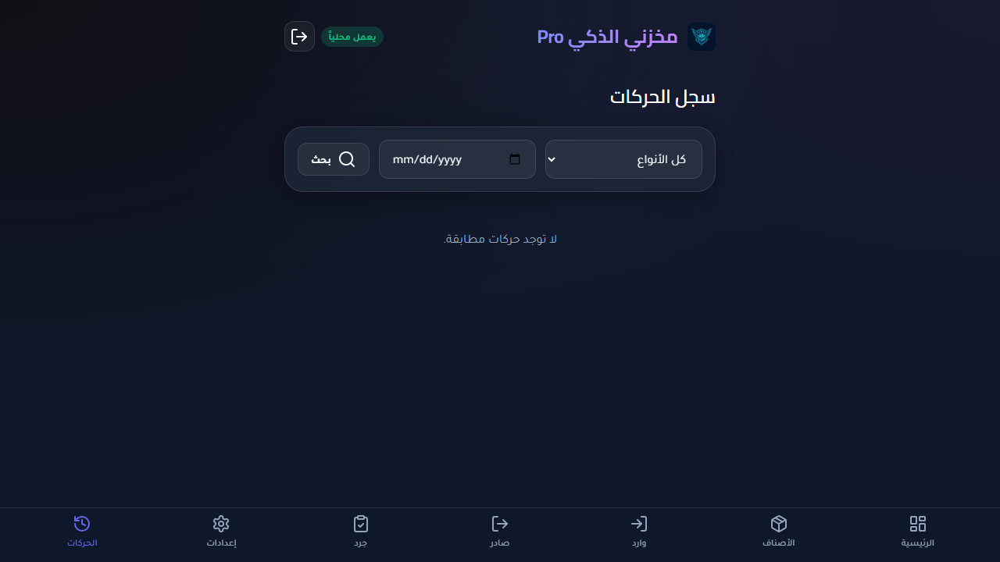
نصيحة: استخدم التصفية بالتاريخ لاستعراض حركات فترة محددة وطباعتها كتقرير. مناسب للمراجعة الشهرية والتدقيق.
قسم الإعدادات يُتيح تخصيص النظام، إدارة المستخدمين، ضبط التكاملات الخارجية، والتحكم في النسخ الاحتياطي للبيانات.
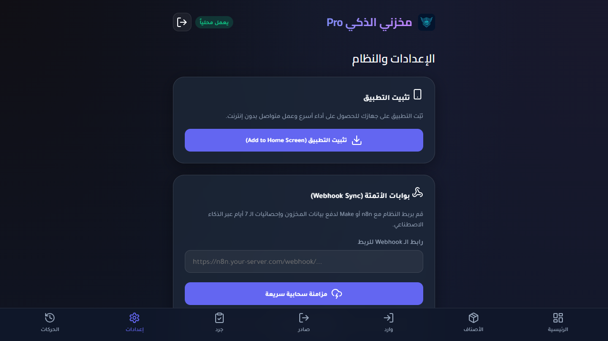
يمكن تثبيت "مخزني الذكي Pro" كتطبيق أصلي على الجهاز (موبايل أو حاسوب) دون الحاجة إلى متجر التطبيقات.
انقر على أيقونة الإعدادات في شريط التنقل
ستظهر نافذة تأكيد التثبيت من المتصفح
انقر "تثبيت" وسيُضاف التطبيق إلى شاشة الرئيسية أو سطح المكتب
يمكن ربط التطبيق بأنظمة خارجية (ERP، Zapier، Make، إلخ) عبر Webhook لمزامنة البيانات تلقائياً.
الصق رابط الـ Webhook الخاص بنظامك الخارجي في الحقل المخصص
انقر "حفظ الإعدادات" لتطبيق التغييرات
انقر "مزامنة الآن" للتحقق من صحة الاتصال وإرسال البيانات
تم تحديث النظام ليدعم العمليات المؤسسية المتقدمة. يشمل هذا التحديث ميزات الأمان، التتبع الدقيق، والتوافق مع بيئات العمل المتنوعة (مثل العمل بدون كاميرا).
تم تخصيص الواجهة لتتناسب مع دور المستخدم. عند دخول موظف بصلاحية "عامل" (Worker)، يقوم النظام تلقائياً بإخفاء جميع البيانات المالية (تكلفة المنتج، إجمالي الفواتير، أسعار الشراء) لضمان الخصوصية، كما يتم إخفاء شاشات الإعدادات والتقارير.
إذا كنت تعمل على جهاز كمبيوتر لا يحتوي على كاميرا، يمكنك الآن التقاط صورة للباركود أو الـ QR عبر هاتفك ونقلها للجهاز (عبر USB أو غيره). في نافذة الماسح الضوئي، اضغط على "رفع صورة"، واختر الصورة ليقوم النظام بقراءتها وتنفيذ العملية مباشرة.
عند صرف بضائع لفرع، يتم تسجيلها بحالة "قيد النقل". يمكن لمدير المخزن الدخول لشاشة "الفروع" ومتابعة البضائع المرسلة والتأكد من استلامها بالفرع لتحديث الرصيد بدقة.
في شاشة "الجرد الفعلي"، يقوم النظام باقتراح 5 أصناف لم يتم جردها مؤخراً لتقوم بجردها دورياً (Smart Cycle Counting). كما يقوم النظام بإرسال إشعارات المتصفح (Push Notifications) عند وصول أي صنف للحد الأدنى للطلب.
يتيح لك النظام من شاشة "التجميع" تكوين "عروض" أو "سلات رمضانية" من أصناف متعددة مع خصم المكونات تلقائياً. كما تتيح لك شاشة "الأصناف" طباعة ملصق باركود احترافي (عبر JsBarcode) لأي منتج بضغطة زر لطباعته ولصقه على الأرفف.
عبر شاشة "مزامنة QR"، يقوم المخزن بتوليد كود QR يحتوي على بيانات أمر الصرف أو الفاتورة المراد إرسالها لجهاز الكاشير (SmartPOS). يكفي مسح هذا الـ QR بكاميرا الكاشير أو برفعه كصورة لاستيراد الحركة فوراً بدون إدخال يدوي.
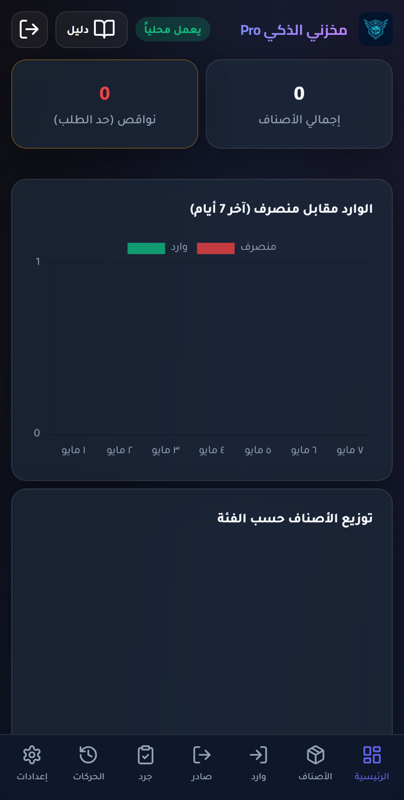
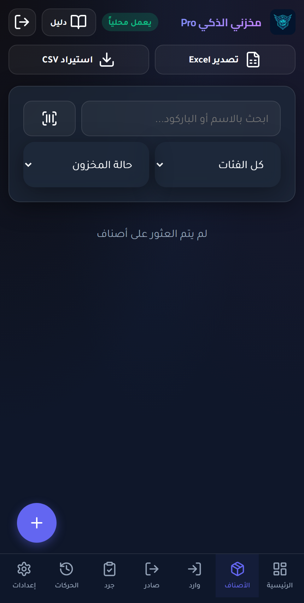
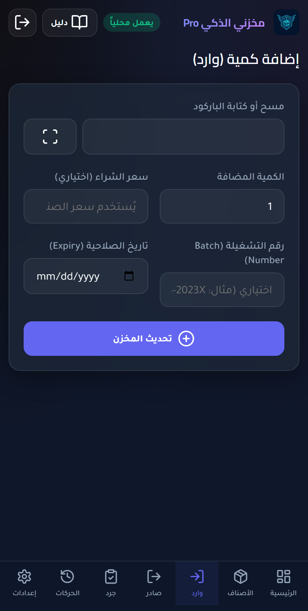
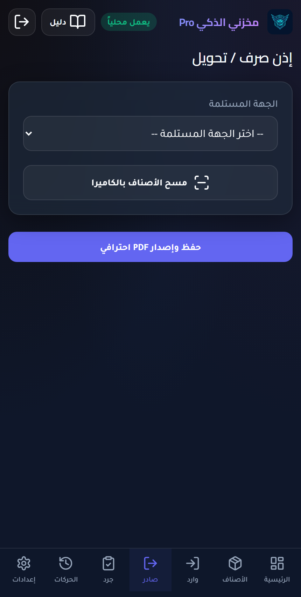
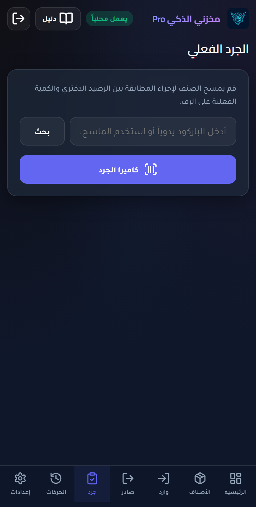
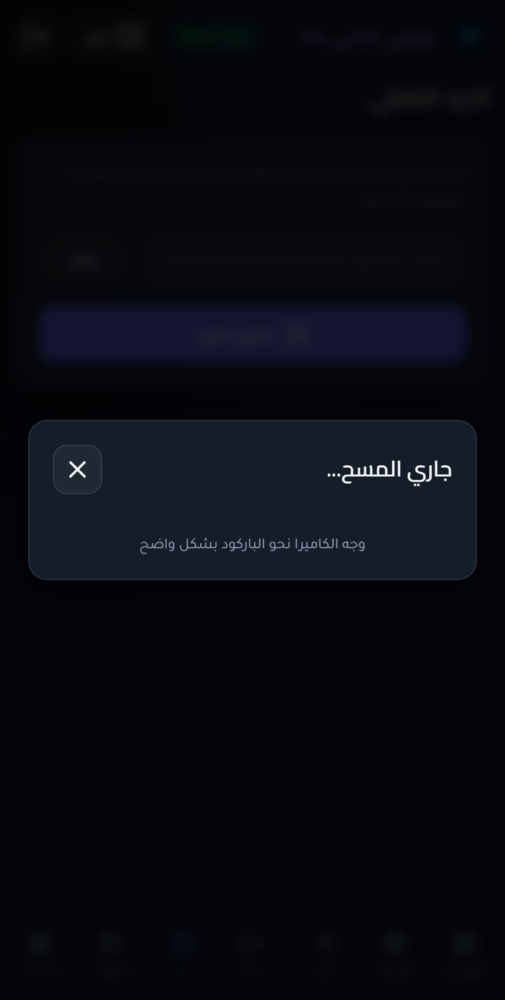
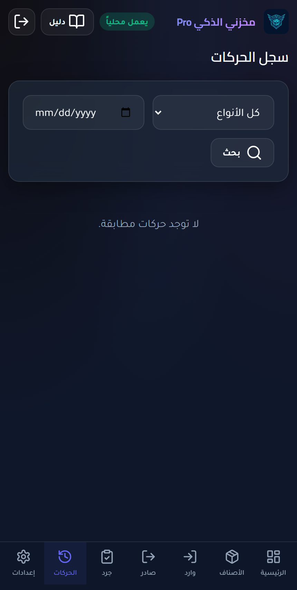
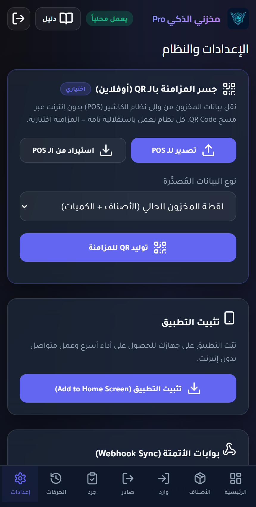
يتيح نظام QR Sync نقل البيانات بسرعة من المخزن لكاشير الفروع دون الحاجة لشبكة أو إنترنت. يمكنك مسح الـ QR أو رفعه كصورة.
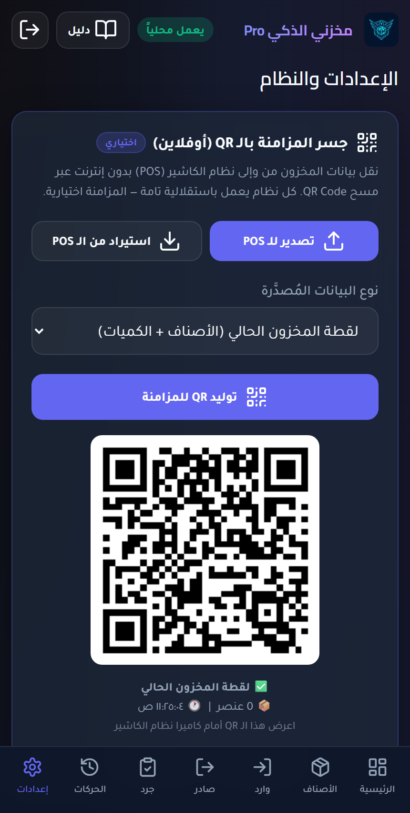
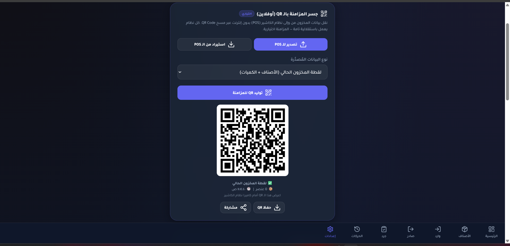
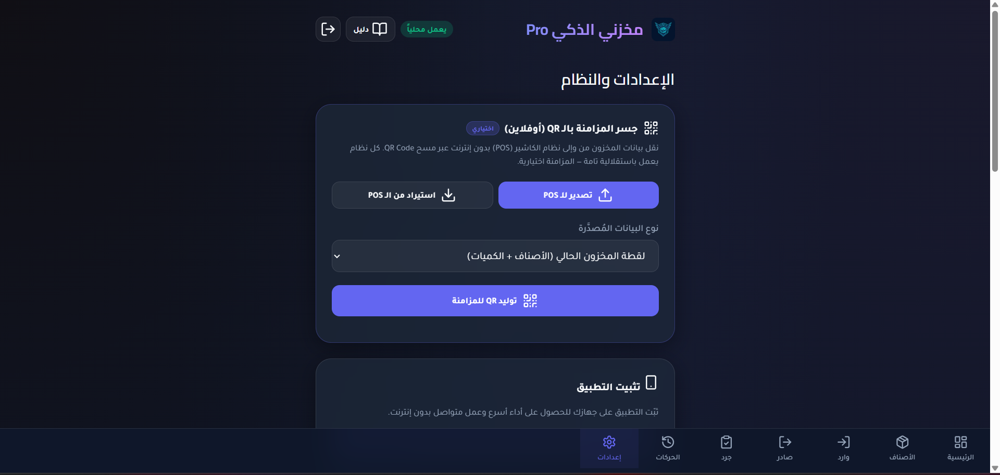
إجابات على الأسئلة الأكثر شيوعاً ونصائح لتحقيق أقصى استفادة من مخزني الذكي Pro.